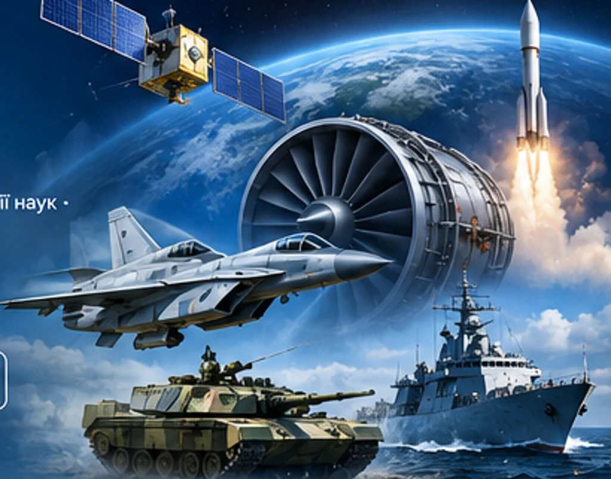

Дослідницький курс · КМАН · 10–11 класи
Аерокосмічна техніка та оборонні технології
Досліджуйте фізичні принципи, інженерні рішення, сучасні технології та їхні перспективи. Кожне заняття доступне для самостійного опрацювання.

11
розділів22
програмні теми216
годин програми
розділів22
програмні теми216
годин програми
Розділи курсу
ВступВід інженерної ідеї до дослідженняРозділ 01Основи науково-дослідницької діяльності4 занять · Перейти до досліджень →Розділ 02Оборонна промисловість і класифікація озброєння та військової техніки4 занять · Перейти до досліджень →Розділ 03Авіаційна техніка та авіаційне двигунобудування5 занять · Перейти до досліджень →Розділ 04Безпілотні авіаційні системи та засоби їх виявлення4 занять · Перейти до досліджень →Розділ 05Перспективні конструкційні матеріали військового призначення4 занять · Перейти до досліджень →Розділ 06Бронетанкова техніка4 занять · Перейти до досліджень →Розділ 07Суднобудування та військово-морська техніка4 занять · Перейти до досліджень →Розділ 08Спеціальна хімія, боєприпаси та розмінування4 занять · Перейти до досліджень →Розділ 09Ракетна техніка4 занять · Перейти до досліджень →Розділ 10Космічна техніка: космічні апарати та супутникові системи5 занять · Перейти до досліджень →Розділ 11Узагальнення результатів дослідження та підготовка до конкурсу-захисту4 занять · Перейти до досліджень →Дослідницьке портфоліоМоє дослідження МАН
Як працювати з курсом
Відкрийте будь-яке заняття, розгорніть ключові питання, вивчіть орієнтири програми, змініть параметри моделі, сформулюйте висновки та створіть PDF через діалог друку браузера («Зберегти як PDF»). Записи зберігаються на Вашому пристрої.
Віртуальні дослідження не замінюють лабораторних вимірювань, консультацій керівника та вимог безпеки. Для тем оборонної техніки застосовуються лише безпечні навчальні моделі.